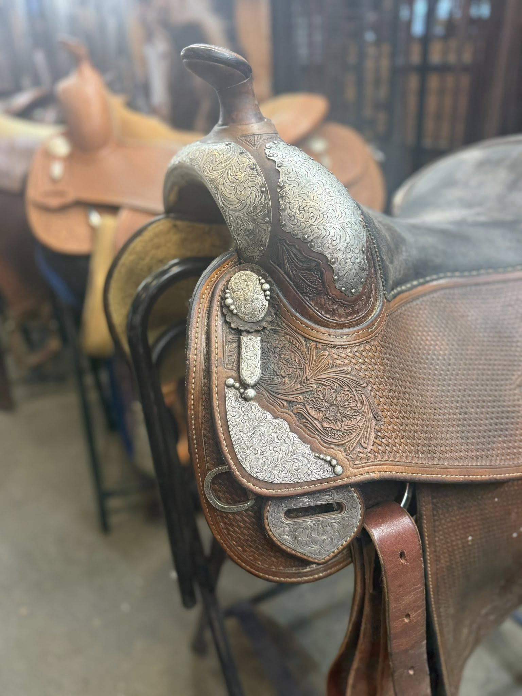
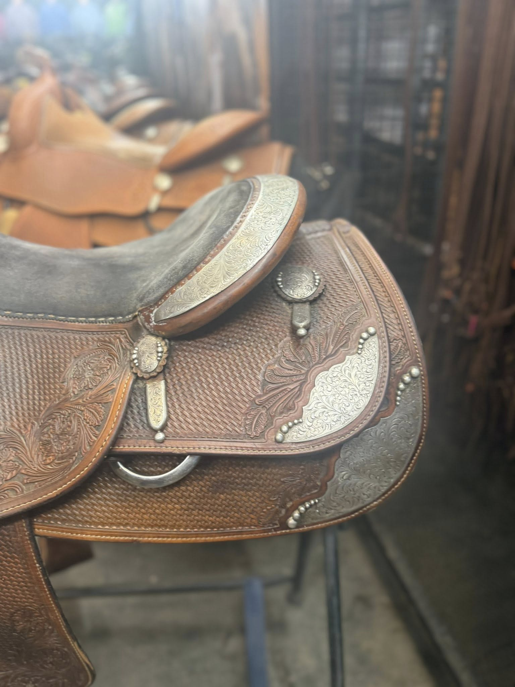

Bob Avila by Bob's Custom — 16" B99-472, Full Silver Package
$1,995
| Maker | Bob's Custom Saddles |
|---|---|
| Model | Bob Avila Signature — B99-472 |
| Seat Size | 16" |
| Tree Width | Contact for fit details |
| Leather | Dark chocolate/brown |
| Tooling | Basketweave field, floral scroll accents |
| Silver | Full silver swell cap, engraved corner plates, oval concho, cantle binding studs |
| Seat | Roughout suede |
This Bob Avila signature model from Bob's Custom Saddles (model B99-472) carries one of the most substantial silver packages in the inventory. The full silver swell cap is engraved with flowing scroll work and studded along the edge, matched by oversized engraved square corner plates on the skirt and an oval concho with pendant keeper at the front dee. The cantle binding studs complete the look.
The dark chocolate leather shows a basketweave body with floral scroll accent panels, and the roughout suede seat provides secure contact in the saddle. A strong buy for the rider who wants a signature reiner at a value price.
Shipping available. David ships nationwide. Contact for a quote to your zip code.
Inspected & certified by David Solum — 40+ years in reining saddles
Inquire About This Saddle